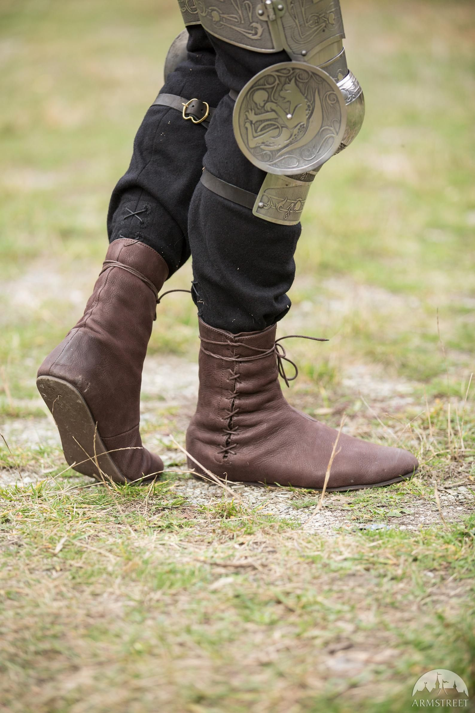
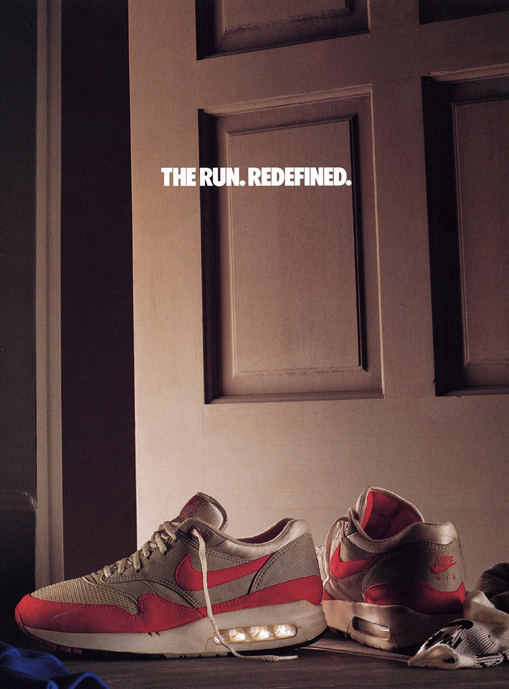

Обувки
- Първобитни обувки
- Появяват се като отговор на студния климат, миграциите и продължителното натоварване на ходилото.
- Позволяват движение по камъни, сняг и неравен терен без нараняване.
- Правени са от животинска кожа или козина, увивани и връзвани около стъпалото с кожени ремъци.

2. Античните обувки
- Обувките се адаптират към военна експанзия, градска инфраструктура и дълги пешеходни разстояния.
- Появяват се твърди подметки, пирони и сложни каишки за стабилност и издръжливост.
- В Гърция и Рим обувките служат като практичен код за гражданство и ранг.

3. Средновековните обувки
- Формата става по-затворена и удължена заради калните пътища и студния климат.
- Производството преминава към занаятчийски гилдии с стандартизирани техники и размери.
- В някои периоди дължината на върха е регулирана със закони според социалния ранг.

4. Индустриалната революция
- Производството се механизира, което прави обувките по-евтини, масови и достъпни за широкото население.
- Разграничението между лява и дясна обувка става масово и фабрично стандартизирано.
- Много фабрични обувки са правени за 6 седмици до 6 месеца интензивно носене, след което се подменят.

5. 20-ти век – спортни обувки
- През 1917 г. се въвежда терминът „маратонка“, което отделя спортната обувка като самостоятелна категория.
- Омекотяването и сцеплението с настилката променят техниката на бягането и намаляват драстично спортните травми.
- Марки и спортисти превръщат обувките в символ на идентичност, не само в продукт.
